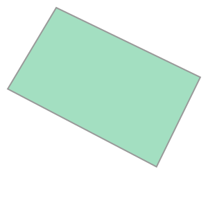
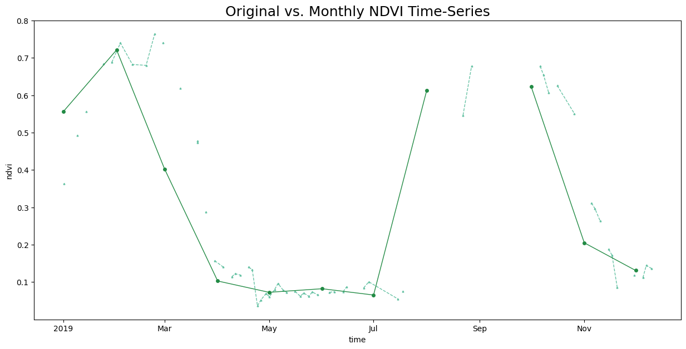

Processing Time-Series with XEE and XArray#
Introduction#
Google Earth Engine (GEE) is a cloud-based platform that has a large public data catalog and computing infrastructure. The XEE extension makes it possible to obtain pre-processed data cube directly from GEE as a XArray Dataset. In this section, we will learn how to process the GEE data using XArray and Dask on local compute infrastructure using the time-series processing capabilities of XArray.
Overview of the Task#
We will obtain a datacube of cloud-masked Sentinel-2 images for a year over a chosen region and apply temporal aggregation to obtain mean monthly NDVI images.
Note: You must have a Google Earth Engine account to complete this section. If you do not have one, follow our guide to sign up.
Output:
2019-01.tif,2019-02.tif, ..: 12 GeoTIFF files of monthly mean NDVI calculated from Sentinel-2 L1C scenes.
Data Credit:
Sentinel-2 Level 1C Scenes: Contains modified Copernicus Sentinel data (2025-02)
Running the Notebook:
The preferred way to run this notebook is on Google Colab.

Setup and Data Download#
The following blocks of code will install the required packages and download the datasets to your Colab environment.
%%capture
if 'google.colab' in str(get_ipython()):
!pip install xee rioxarray dask['distributed']
import datetime
import ee
import matplotlib.pyplot as plt
import numpy as np
import os
import pandas as pd
import pyproj
import rioxarray as rxr
import xarray
from xee import helpers
output_folder = 'output'
if not os.path.exists(output_folder):
os.mkdir(output_folder)
Initialize EE and Dask Cluster#
Initialize EE with with the standard endpoint which is recommended to be used with XEE workflows that use server-side computing. Replace the value of the cloud_project variable with your own project id that is linked with GEE.
cloud_project = 'spatialthoughts' # replace with your project id
try:
ee.Initialize(project=cloud_project)
except:
ee.Authenticate()
ee.Initialize(project=cloud_project)
Setup a local Dask cluster.
from dask.distributed import Client
client = Client() # set up local cluster on the machine
client
If you are running this notebook in Colab, you will need to create and use a proxy URL to see the dashboard running on the local server.
if 'google.colab' in str(get_ipython()):
from google.colab import output
port_to_expose = 8787 # This is the default port for Dask dashboard
print(output.eval_js(f'google.colab.kernel.proxyPort({port_to_expose})'))
Each of our Dask workers need Earth Engine authentication. Initialize Dask workers using ee.Initialize().
from dask.distributed import WorkerPlugin
class EEPlugin(WorkerPlugin):
def __init__(self):
pass
def setup(self, worker):
self.worker = worker
try:
ee.Initialize(project=cloud_project)
except:
ee.Authenticate()
ee.Initialize(project=cloud_project)
ee_plugin = EEPlugin()
client.register_plugin(ee_plugin)
Data Pre-Processing#
Define a geometry for a field.
geometry = ee.Geometry.Polygon([[
[82.60642647743225, 27.16350437805251],
[82.60984897613525, 27.1618529901377],
[82.61088967323303, 27.163695288375266],
[82.60757446289062, 27.16517483230927],
]])
We start with the Sentinel-2 collection, apply a cloud mask and compute NDVI using the Google Earth Engine API.
s2 = ee.ImageCollection('COPERNICUS/S2_HARMONIZED')
startDate = ee.Date.fromYMD(2019, 1, 1)
endDate = ee.Date.fromYMD(2020, 1, 1)
filtered = s2 \
.filter(ee.Filter.date(startDate, endDate)) \
.filter(ee.Filter.lt('CLOUDY_PIXEL_PERCENTAGE', 30)) \
.filter(ee.Filter.bounds(geometry))
# Load the Cloud Score+ collection
csPlus = ee.ImageCollection('GOOGLE/CLOUD_SCORE_PLUS/V1/S2_HARMONIZED')
csPlusBands = csPlus.first().bandNames()
# We need to add Cloud Score + bands to each Sentinel-2
# image in the collection
# This is done using the linkCollection() function
filteredS2WithCs = filtered.linkCollection(csPlus, csPlusBands)
# Function to mask pixels with low CS+ QA scores.
def maskLowQA(image):
qaBand = 'cs'
clearThreshold = 0.6
mask = image.select(qaBand).gte(clearThreshold)
return image.updateMask(mask)
filteredMasked = filteredS2WithCs \
.map(maskLowQA)
# Write a function that computes NDVI for an image and adds it as a band
def addNDVI(image):
ndvi = image.normalizedDifference(['B8', 'B4']).rename('ndvi')
return image.addBands(ndvi)
# Map the function over the collection
withNdvi = filteredMasked.map(addNDVI)
When loading this data to XArray, we need to pick a projection and resolution.
output_crs = 'EPSG:32644' # UTM Zone 44N
output_scale = 10
We also convert the input ee.Geometry to shapely. This will not be required after this issue is fixed.
import shapely
reprojected_geometry = geometry.transform(**
{'proj': output_crs, 'maxError':1})
input_geometry = shapely.geometry.shape(reprojected_geometry.getInfo())
input_geometry

XEE requires explicit grid parameters. We extract these using the helper function fit_geometry.
grid_params = helpers.fit_geometry(
geometry=input_geometry,
geometry_crs=output_crs, # Input geometry CRS
grid_crs=output_crs,
grid_scale=(output_scale, -output_scale)
)
grid_params
{'crs': 'EPSG:32644',
'crs_transform': (10.0, 0.0, 659160.0, 0.0, -10.0, 3005760.0),
'shape_2d': (45, 38)}
ds = xarray.open_dataset(
withNdvi.select('ndvi'),
engine='ee',
**grid_params,
chunks={} # Enable dask
)
ds
<xarray.Dataset> Size: 624kB
Dimensions: (time: 91, y: 38, x: 45)
Coordinates:
* time (time) datetime64[ns] 728B 2019-01-01T05:11:07.231000 ... 2019-1...
* y (y) float64 304B 3.006e+06 3.006e+06 ... 3.005e+06 3.005e+06
* x (x) float64 360B 6.592e+05 6.592e+05 ... 6.596e+05 6.596e+05
Data variables:
ndvi (time, y, x) float32 622kB dask.array<chunksize=(48, 38, 45), meta=np.ndarray>
Attributes: (12/17)
date_range: [1435017600000, 1647993600000]
description: <p>Sentinel-2 is a wide-swath, high-resolution, m...
keywords: ['copernicus', 'esa', 'eu', 'msi', 'radiance', 's...
period: 0
product_tags: ['msi', 'radiance']
provider: European Union/ESA/Copernicus
... ...
title: Sentinel-2 MSI: MultiSpectral Instrument, Level-1C
type_name: ImageCollection
visualization_0_bands: B4,B3,B2
visualization_0_max: 3000.0
visualization_0_min: 0.0
visualization_0_name: RGBSelect the ndvi variable.
original_time_series = ds.ndvi
original_time_series
<xarray.DataArray 'ndvi' (time: 91, y: 38, x: 45)> Size: 622kB
dask.array<open_dataset-ndvi, shape=(91, 38, 45), dtype=float32, chunksize=(48, 38, 45), chunktype=numpy.ndarray>
Coordinates:
* time (time) datetime64[ns] 728B 2019-01-01T05:11:07.231000 ... 2019-1...
* y (y) float64 304B 3.006e+06 3.006e+06 ... 3.005e+06 3.005e+06
* x (x) float64 360B 6.592e+05 6.592e+05 ... 6.596e+05 6.596e+05
Attributes:
id: ndvi
data_type: {'type': 'PixelType', 'precision': 'float', 'min': -1, 'm...
dimensions: [10980, 10980]
crs: EPSG:32644
crs_transform: [10, 0, 600000, 0, -10, 3100020]Since the data size is small, we can call compute() and load it into memory.
%%time
original_time_series = original_time_series.compute();
Aggregating the Time-Series#
We have a irregular time-series with a lot of noise. Let’s create a monthly NDVI time-series by computing the monthly average NDVI. We can use XArray’s resample() method to aggregate the time-series by Months and coompute the mean. We specify time as MS to indicate aggregating by month start and label as left to indicate we want the start of the month as our series labels.
Reference Pandas Offset Aliases
time_series_aggregated = original_time_series.resample(time='MS', label='left').mean()
time_series_aggregated
Plot and Extract the Time-Series at a Single Location. As our dataset coordinates are in UTM, we convert the lat/lon to UTM coordinates.
latitude = 27.164335
longitude = 82.607376
crs = 'EPSG:32644'
transformer = pyproj.Transformer.from_crs('EPSG:4326', output_crs, always_xy=True)
x, y = transformer.transform(longitude, latitude)
x,y
(659255.906258423, 3005657.109226172)
original_ts = original_time_series.interp(x=x, y=y)
aggregated_ts = time_series_aggregated.interp(x=x, y=y)
fig, ax = plt.subplots(1, 1)
fig.set_size_inches(15, 7)
original_ts.plot.line(
ax=ax, x='time',
marker='^', color='#66c2a4', linestyle='--', linewidth=1, markersize=2)
aggregated_ts.plot.line(
ax=ax, x='time',
marker='o', color='#238b45', linestyle='-', linewidth=1, markersize=4)
ax.set_title('Original vs. Monthly NDVI Time-Series', size = 18)
plt.show()

Downloading Time-Series Images#
Save the processed monthly NDVI images using rioxarray as GeoTIFF files.
for time in time_series_aggregated.time.values:
image = time_series_aggregated.sel(time=time)
date = np.datetime_as_string(time, unit='M')
output_file = f'{date}.tif'
output_path = os.path.join(output_folder, output_file)
clipped_image = image.rio.clip([input_geometry])
clipped_image.rio.to_raster(output_path, driver='COG')
print(f'Created file at {output_path}')
If you want to give feedback or share your experience with this tutorial, please comment below. (requires GitHub account)